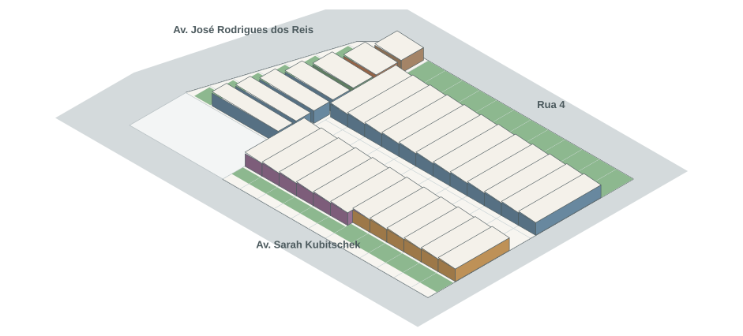

Estudos de caso · HIS em casas térreas e em fita
ESTUDOS DE CASO
ESTUDO DE CASO {{c.n}}
{{c.name}}
Arquitetos{{c.arq}}
Local{{c.local}}
Ano{{c.ano}}
Terreno{{c.terreno}}
Unidades{{c.un}}
Área por unidade{{c.area}}
Implantação redesenhada · acessos e espaço coletivo
Planta da unidade · setorização em cores e circulação
Corte · estrutura
{{c.diag}}
Lição para o projeto: {{c.licao}}
Legenda de setorização (casos e projeto):
Social
Íntimo
Serviço
Circulação
Área livre
Meu projeto · conceito e partido
{{p.t}}
Estudo da forma · volumetria do conjunto

Casas térreas de cerca de 3,2 m, cobertura em fibrocimento i = 5%. Sem escala.
Programa de necessidades
TipoUn.ÁreaTotal
011672,71 m²1.163,36
02676,83 m²460,98
03687,42 m²524,52
04178,99 m²78,99
05 PNE181,00 m²81,00
06 PNE173,65 m²73,65
Total312.382,50
Fluxograma da unidade
Acesso→
Sala→
Cozinha→
Serviço
↳
Circulação→
Quartos+
Banho
UNIVERSIDADE CRUZEIRO DO SUL · POLO UDF
Arquitetura e Urbanismo · Trabalho de Curso I
Aluno: [nome] · RGM [ ]Orientadora: [nome]
ConteúdoEstudos de caso, partido e programa
Escala: indicadaData: [dd/mm/2026]
Prancha02/03